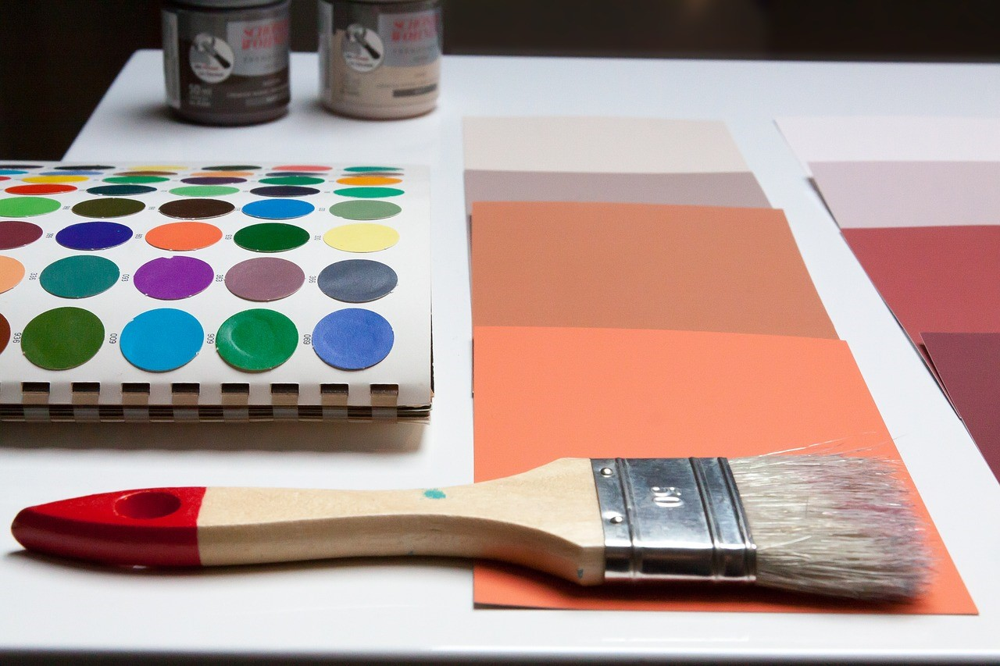
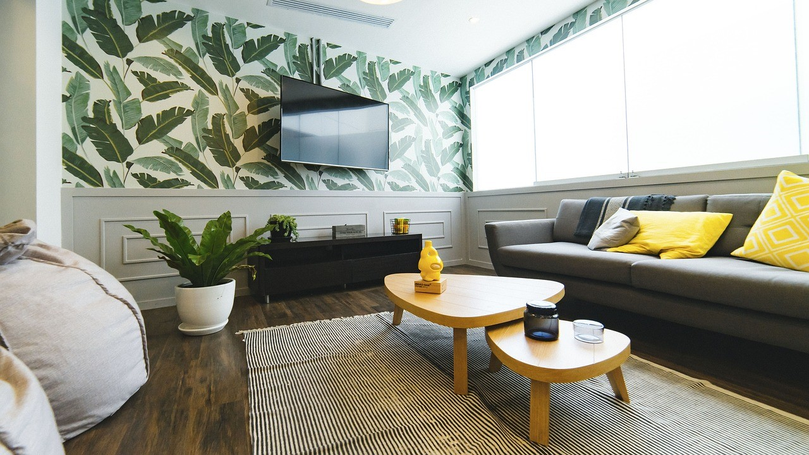
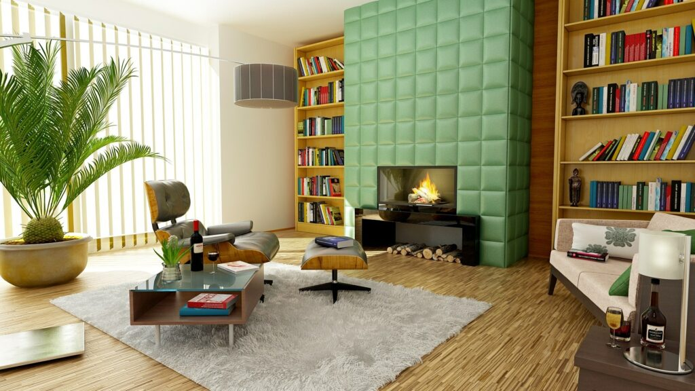
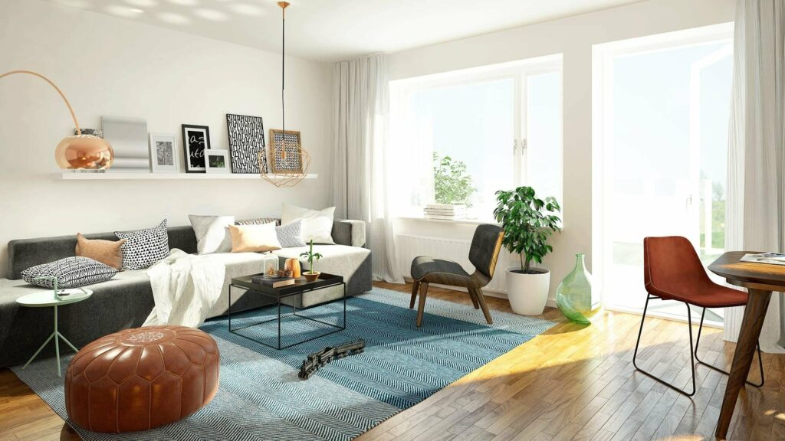
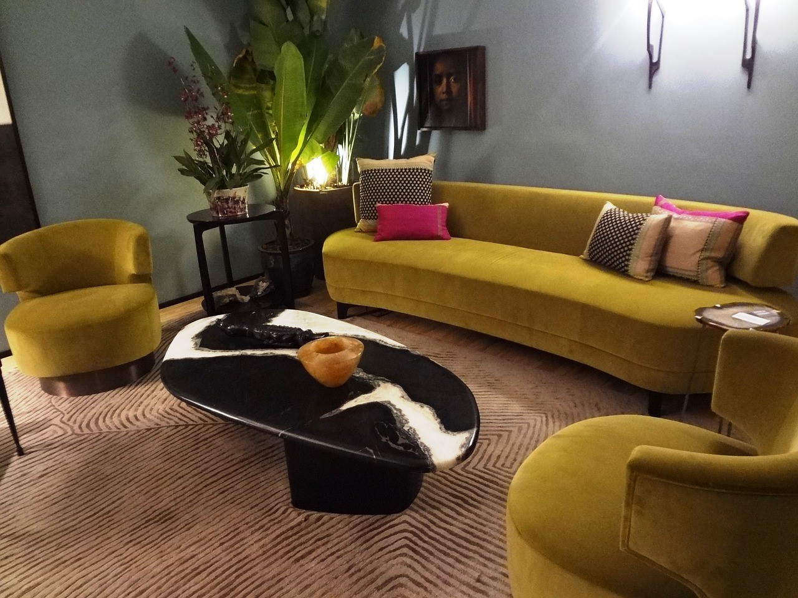
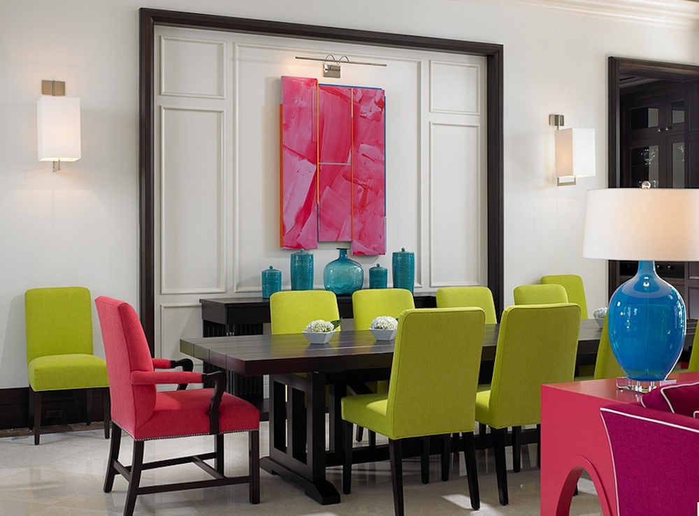

Importance of Color in Interior Design

Color is an international visual language understood by all so when you are trying to communicate or transmit something through interior design, there is no better way to do it than through color. In order to do that, you need to understand how colors behave, how they change their character and how they influence our mood. Color plays an essential role in our lives. The interior design is highly dependent on the color scheme as it is the most important factor of interior design. Colors, lights, and shades always surround us.
The use of different colors is the quickest, easiest and most realistic way to develop immediate modification in the room. A newly painted room will refresh the interior while eliminating the structural imperfections. Paint can entirely change the atmosphere of the interior and create harmony with the decor by your style.
Each tone of color has a significant effect on our mood, has a specific meaning, and interlinks with our mind frame. Colors have the power to change your mood and mind. You are so choosing the best combination of colors in your house can bring together a variety of emotions at your home like pleasant, calming, intimate, comfortable, dramatic and aggressive, etc.
It depends on our inbuilt characters and genetics on how we react to each color. The genetic programming let us respond to various colors and appreciate them in the environment. The interior designer experts explore that the colors can change your experience of the moment
The color has some effects on our lives. Some are outlined here:
Colors for Relaxing \
There is also the role of pigments in relaxing. The light shades of cooler colors such as green and blue can make the room look more refreshing. It is the best option for your room, especially the bedroom as it will bring the feel for calm and relaxation. You can choose
more vibrant colors for your living room to have a lively and energetic feel.
Affects Your Mood \
One of the pronounced mood influencer and mood creators is the color. The walls painted in red color bring you hot and lively feelings.
The buttercream will take saturated sunny hues that bring the feel of warmth even on the coldest days. Greens and blues will relax and calm your mood. The earth tones will ground the space.



Colors Effect Psychology \
Colors also affect our psychological behavior. Have you ever noticed why fast food restaurants use brilliant and bright colors like orange and red on the walls? It is proved that the red color can increase our pulse and hence promote appetite. People is desire to eat will increase when they see the orange or red color in the restaurant. This is the reason why restaurants use such bright and warm colors. Now you know the importance of color scheme in interior designing. The color should be chosen by the mood, atmosphere, and emotion you want for that particular area.
Joyful Colors \
When you think of joy, the yellow color may come into your mind. The yellow color is associated with warmth, optimism, and happiness. The yellow color is best for the living room where we spent a lot of time with family. The yellow must be soft, not too much saturated, and bright yellow. Yellow has the power to make people compelling, energetic, and cheerful. It also boosts the mood of people and let them forget their problems and encourage conversation. It is also suitable for gyms and exercise rooms.


Colors are surroundings; you are the accurate reflection of your real personality, and
they must make you feel comfortable. So, use the colors for your advantage. You
do not need to bother about general trends so that you can have a perfect
and stunning home. Color fads may come and go. pets who reside in
your house make sure it is beautiful by picking colors that reveal their
choices and personalities. The secret is to blend the colors or shades you prefer
correctly into a pleasing blend.
As a general rule, the light colors make
rooms feel larger and brighter. Dark colors are sophisticated and warm
and they make rooms feel intimate.